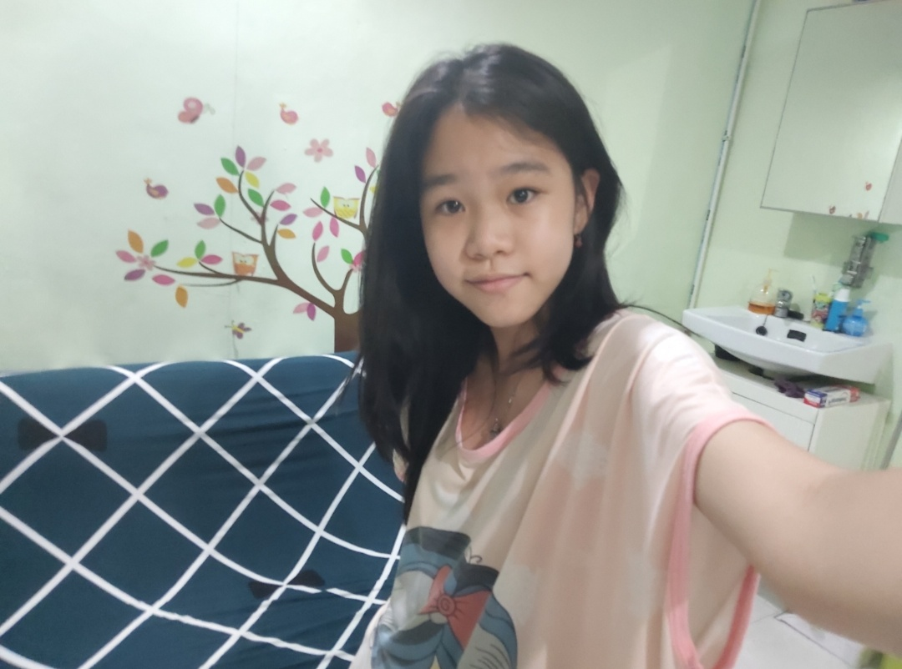
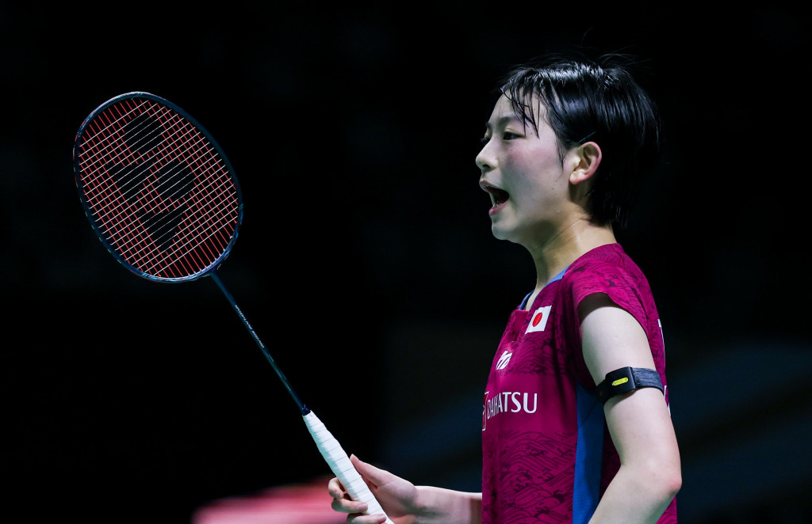

Selamat Datang Di Web Pertama Saya
Biodata Diri
Nama : Theresa Erin
Tempat Lahir : Jakarta
Tanggal Lahir : 16 Oktober 2009
Email : theresa.erin27@sma.belajar.id
Hobi : Badminton
Makanan Kesukaan : Mashed Potato

Moto Hidup : Bersyukur setiap saat
id insta : kentankkori